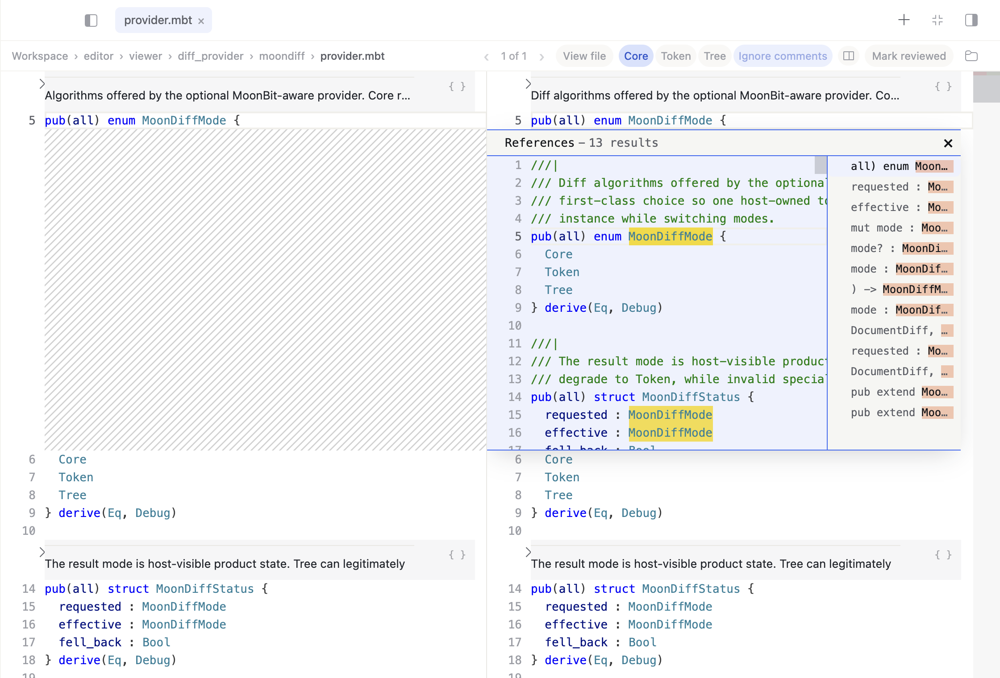

从这里开始。
安装 SeekMoon，连接模型，完成你的第一个开发任务。
本网站提供 v0.2.5 安装包。以下说明参考官方当前文档，部分功能与按钮名称可能随版本变化，请以安装后的界面为准。
01 下载与安装
先选择与你的电脑匹配的安装包。当前下载入口提供 macOS Apple 芯片版和 Windows x64 版。
macOS · Apple 芯片
- 在苹果菜单的「关于本机」中确认电脑使用 Apple 芯片，如 M1、M2、M3 等。
- 下载 SeekMoon.dmg，双击打开磁盘映像。
- 将 SeekMoon 拖入「应用程序」（Applications），再从「应用程序」中启动。
Windows · x64
- 在「设置 → 系统 → 关于」中查看系统类型，确认是 x64 电脑。
- 下载 Windows 安装程序，运行后按安装向导完成安装。
- 启动 SeekMoon，进入首次配置。
当前入口不包含 Intel Mac 或 Linux 安装包。其他平台请查看官方桌面端说明 ↗。
02 首次配置
SeekMoon 需要连接模型服务。请准备自己的 API Key（接口密钥）；模型调用由相应服务商向你的账号计费。
以 DeepSeek 为例
- 进入 DeepSeek 开放平台 ↗，登录后创建 API Key，并确认账号可以使用 API 服务。
- 打开 SeekMoon。尚未配置可用服务时，会出现 API 设置窗口；也可以进入 Settings（设置）中的 API 区域。
- 选择 DeepSeek official，填入 API Key，按界面提示完成配置。
- 回到对话，在输入区选择可用模型，发送一条简单消息，确认能够收到回复。
API Key 填在设置中即可，不要放进聊天内容或项目文件。未配置可用服务时，发送按钮可能不可用。
使用其他模型服务
官方当前文档还列出了 Z.AI GLM、OpenRouter，以及用于其他兼容服务的 Custom URL（自定义地址）。选择对应服务并填写它提供的密钥；使用自定义地址时，按服务商说明填写兼容的 Chat Completions 接口地址。可选项以你安装的版本为准。
03 第一个任务
建议先在空白工作空间试一个小任务，熟悉「提出目标 → 查看过程 → 检查结果」的完整流程。
- 点击侧边栏的 New chat（新建对话）。
- 确认本次任务使用的工作目录。默认情况下，对话会拥有自己的工作空间；让智能体先报告目录和已有文件，可以避免选错位置。
- 先发送下面这段话，确认目录后再让它开始编写。
请先告诉我当前工作目录，以及目录里有哪些文件，暂时不要修改。 我想在空白目录中创建一个 MoonBit 小项目，实现一个 add(a, b) 函数，返回两个整数之和，并添加一个测试。等我确认目录后再开始。
目录确认无误后，可以继续说：
可以开始。完成后请运行测试，并用中文说明改了哪些文件、测试是否通过。
智能体会根据目标分析代码、实施修改并运行验证。读完结果后，再检查实际文件与测试输出；遇到失败，可以把完整报错作为后续任务继续处理。
04 理解与审查代码
任务完成后，打开 Diff Review（变更审查）。先确认修改范围，再看实现和测试是否符合要求。
- 按行查看变更
- 浏览新增和删除的内容，核对修改了哪些文件。
- Token Diff · 词元差异
- 查看 MoonBit 代码时，减少换行和缩进带来的干扰，聚焦实际修改。
- Syntax Tree Diff · 语法树差异
- 理解函数提取、变量重命名等结构变化；需要时查找定义与引用，检查影响范围。

代码很多时，先看结构
SeekMoon 可在 MoonBit 代码旁渲染文档和架构图，也支持语法树搜索。可以先让智能体解释模块关系，再缩小搜索和修改范围。这些能力的具体入口请结合当前版本和官方产品介绍 ↗查看。
请解释这次修改对调用方有什么影响，并列出测试尚未覆盖的情况。
05 继续与管理任务
同一个目标可以在原对话里继续补充要求；另一个独立目标可以使用新对话。侧边栏中的历史对话可以重新打开，接着处理。
任务运行时，如果界面提供以下选项：
- Steer now（立即补充指引）：将新要求加入正在进行的任务。
- Queue next（排队到下一轮）：等当前轮结束后再执行新要求。
- 停止按钮（■）：中断当前运行。停止后先检查已经产生的修改，再决定下一步。
06 常见问题
发送按钮为什么点不了？
先检查 API 设置。官方说明中，未配置可用模型服务时会禁用发送。确认服务商、密钥及自定义地址填写正确，再根据界面给出的提示排查。
配置了密钥，仍然请求失败怎么办？
保存完整报错，检查网络、服务商 API 可用状态，以及账号余额或配额。密钥失效时在设置中更换；不要将密钥贴进反馈截图。
生成的文件保存在哪里？
官方说明中的默认工作空间位于系统「文档」目录下的 OpenSeek/<session-id>，系统配置可能改变其实际位置。已有项目请以当前任务的工作目录为准；不确定时先让智能体报告目录。
测试失败了，要重新开一个任务吗？
通常可以在当前对话继续，让智能体根据具体报错定位原因、修复后重新运行相关测试。这样能保留之前的任务上下文。
安装时遇到系统拦截怎么办？
先确认安装包来自本网站链接指向的 MoonBit 官方下载域名，并记录系统提示。若仍无法安装，请附上系统版本、芯片或架构、安装包版本和错误截图，到官方问题区 ↗反馈。
07 界面词汇对照
认识这几个英文词，操作时会更容易找到对应入口。
| 界面文字 | 中文含义 |
|---|---|
| Settings | 设置 |
| API Key | 接口密钥 |
| New chat | 新建对话 |
| Workspace | 工作空间 |
| Diff Review | 代码变更审查 |
| Find References | 查找引用 |
参考资料
本页是中文上手指南，不替代各版本发布说明。内容依据：